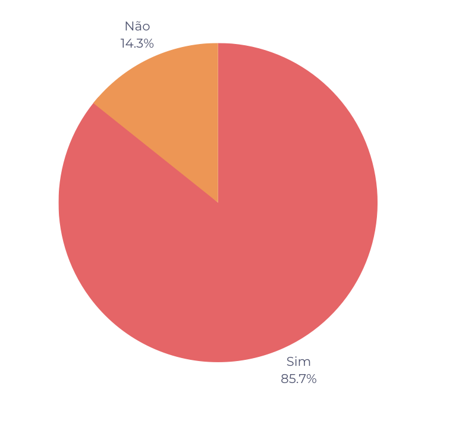

Verificação Etapa 2
Introdução
Este documento possui como objetivo documentar os resultados da verificação dos artefatos da etapa 2 do grupo 7. O responsável por esta avaliação é o avaliador Gustavo Barbosa de Oliveira e a data de execução foi no dia 13 de junho de 2023. Na tabela 1, pode-se observar os artefatos avaliados e a versão dos mesmos no dia da avaliação.
| Artefato | Versão |
|---|---|
| Perfil de Usuário | 1.1 |
| Personas | 1.1 |
| Elicitação: BrainStorming | 1.1 |
| Elicitação: Storytelling | 1.1 |
| Priorização: Escala de três níveis | 1.1 |
| Priorização: MosCow | 1.1 |
| Priorização: Baseada em valor, custo e risco | 1.1 |
Tabela 1: Artefatos avaliados da etapa 2 (Fonte: Gustavo, 2023)
Checklist
Na tabela 3 - Perfil de Usuário
| Número | Pergunta | Resposta |
|---|---|---|
| 1 | Os dados foram obtidos por meio de pesquisas, entrevistas, observação ou análise de dados existentes? | Sim |
| 2 | Os usuários foram agrupados em segmentos com base em características comuns? | Sim |
| 3 | Foram criadas personas fictícias que representem perfis típicos de usuários, com base nas informações coletadas | Sim |
| 4 | As porcentagens de usuários em cada segmento foram determinadas? | Sim |
Na tabela 4 - Personas
| Número | Pergunta | Resposta |
|---|---|---|
| 5 | Foram identificados os objetivos e as tarefas que os usuários desejam realizar ao interagir com o sistema ou produto? | Sim |
| 6 | As personas contém Nome, Idade, Gênero, Status, Objetivos, Habilidades, Relacionamentos, Requisitos e Expectativas? | Sim |
| 7 | Possui entre 3 a 12 personas? | Sim |
| 8 | Possui justificativa do número de personas? | Sim |
| 9 | Possui uma antipersona? | Sim |
Na tabela 5 - Brainstorming
| Número | Pergunta | Resposta |
|---|---|---|
| 10 | Possui local, data e horário da reunião de Brainstormig? | Sim |
| 11 | Está especificado o papel de cada participante do Brainstorming? | Não |
| 12 | Foram utilizadas técnicas para incentivar a geração de ideias?(palavras-chave, imagens ou diagramas) | Não |
Na tabela 7 - Storytelling
| Número | Pergunta | Resposta |
|---|---|---|
| 13 | Os registros da atividade de priorização dos requisitos foram adequadamente documentados? | sim |
| 14 | As histórias conseguem comunicar claramente a visão e as necessidades dos usuários para os membros da equipe de desenvolvimento? | sim |
| 15 | O Storytelling incorpora elementos emocionais e contextuais para criar empatia e compreensão dos usuários e suas necessidades? | sim |
| 16 | O Storytelling aborda as restrições e limitações do sistema, fornecendo informações importantes para a equipe de desenvolvimento considerar durante a implementação? | não |
| 17 | As histórias do Storytelling foram validadas e verificadas por meio de revisões e feedback dos stakeholders relevantes para garantir sua precisão e adequação? | não |
Na tabela 8 - Escala de três níveis
| Número | Pergunta | Resposta |
|---|---|---|
| 18 | A priorização levou em consideração os critérios importância e urgência? | sim |
| 19 | Os níveis de priorização foram divididos em Alta, Média e Baixa? | sim |
| 20 | O modelo de quadrante utilizado para classificar os requisitos foi visualmente intuitivo e facilmente compreensível para os stakeholders? | sim |
| 21 | As dependências entre requisitos foram consideradas no processo de ranqueamento e priorização, garantindo que requisitos dependentes tenham prioridades consistentes? | sim |
Na tabela 9 - MosCow
| Número | Pergunta | Resposta |
|---|---|---|
| 22 | Cada requisito foi adequadamente classificado como Must Have (Deve ter), Should Have (Deveria ter), Could Have (Poderia ter) ou Won't Have (Não terá)? | sim |
| 23 | A participação do cliente e/ou personas foi ativamente envolvida no processo de priorização, garantindo que suas perspectivas e necessidades sejam consideradas? | sim |
| 24 | Foi realizada uma revisão cuidadosa para garantir que nenhum requisito importante tenha sido negligenciado ou erroneamente classificado, evitando a exclusão indevida de requisitos essenciais? | sim |
| 25 | Os requisitos classificados como Won't Have (Não terá) foram revisados e justificados adequadamente, assegurando que a exclusão desses requisitos não afete negativamente o escopo e os objetivos do projeto? | sim |
Na tabela 10 - Baseada em valor, custo e risco
| Número | Pergunta | Resposta |
|---|---|---|
| 26 | Foram priorizados os requisitos com base no valor que eles agregam ao negócio? | sim |
| 27 | Foram priorizados aqueles que ajudam a mitigar os riscos mais críticos ou que possuem menor nível de incerteza? | sim |
| 28 | Foram priorizados aqueles com maior ROI ou benefícios mais significativos? | não |
| 29 | Foi considerado o impacto dos requisitos na satisfação e na experiência do cliente. | sim |
| 30 | Foi considerada a complexidade e a interdependência dos requisitos. Priorizar aqueles que são mais simples e independentes, permitindo uma entrega mais rápida e uma menor probabilidade de erros ou atrasos. | sim |
Resultados
É possível observar pela Figura 1 que das 30 perguntas do checklist, 5 foram respondidas como "Não" (14.3%) enquanto 17 foram respondidas como "Sim" (85.7%%). A seguir será documentado as observações feitas sobre cada um dos artefatos com os pontos de atenção que foram notados pela execução do checklist.
Brainstorming:
- Não ficou claro o papel de cada participante na reunião
- Não foi especificado de foram utilizadas técnicas para estimular a geração de ideias
Storytelling:
- Não foram abordadas limitações do sistema, fornecendo informações importantes para a equipe de desenvolvimento considerar durante a implementação
- Não está claro se as histórias foram validadas e verificadas por stekeholders
Baseada em valor, custo e risco:
- Não foi levanda em consideração o ROI na priorização

Fonte: Autoria própria
Tabela de Versionamento
| Data | Versão | Descrição | Autor | Revisor |
|---|---|---|---|---|
| 13/06/2023 | 1.0 |
Documentação da execução da verificação | Gustavo Barbosa |